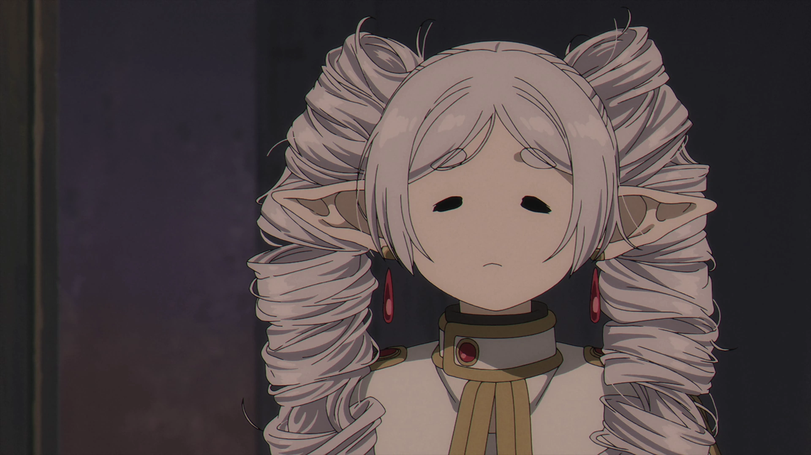
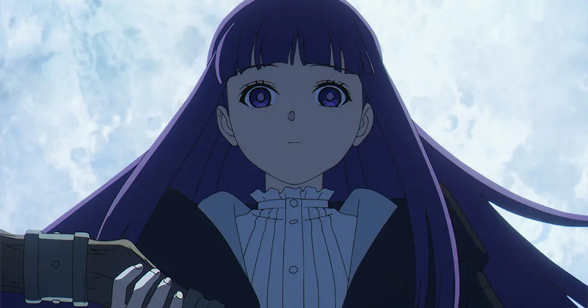

Hello!
Welcome to a small fan website about my favorite main characters in all of Anime! A Powerful Mage whos lived over 1000 years!
About
After defeating the Demon King, the hero’s party goes their separate ways. Frieren, an elf who lives for over a thousand years, sets out on a new journey and slowly comes to understand the humans she traveled with.
The Party
Hover over a card to learn more.

Frieren

Fern

Stark

Himmel
Hover over a character!
Spell Wishlist
Frieren loves collecting spells. What would you add? Click a spell to mark it as learned.